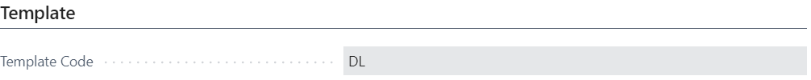
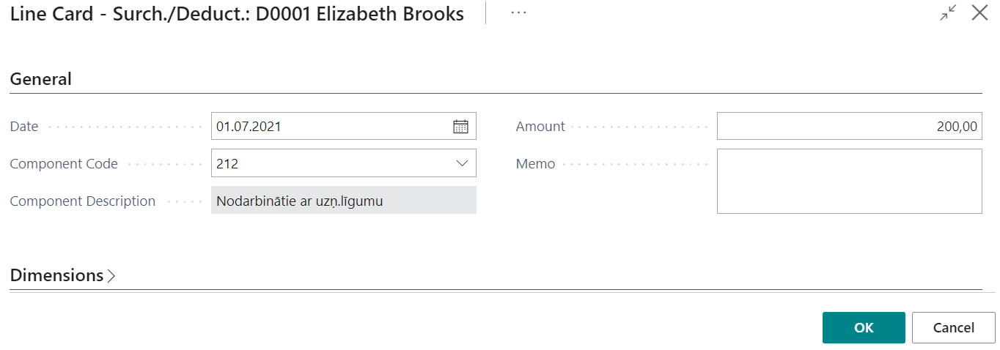
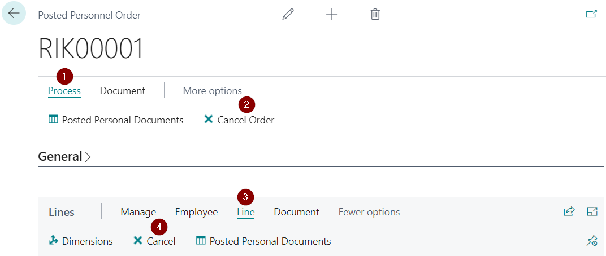
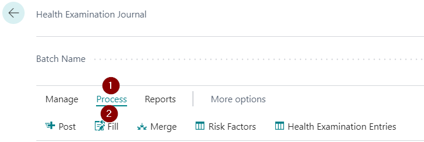
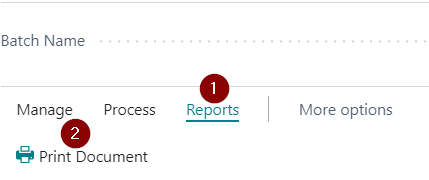
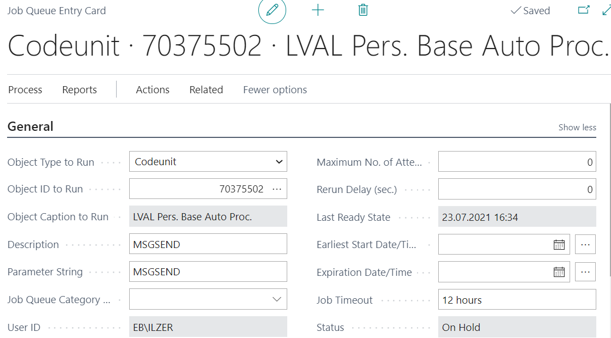
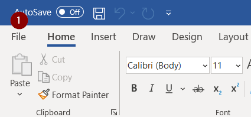
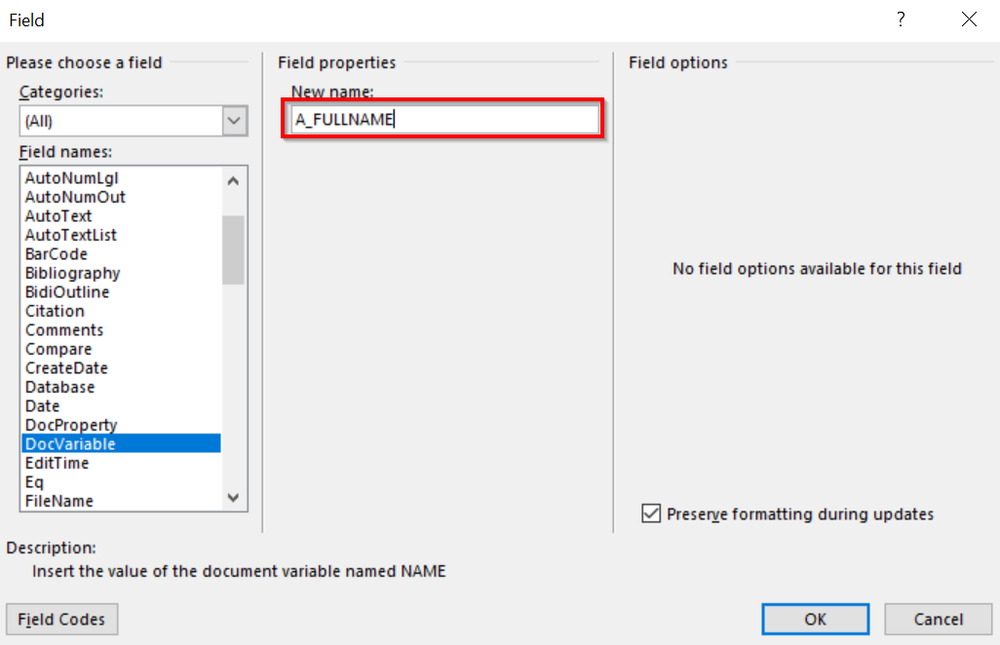

Personnel Setup
To start the work with the Personnel module, following setup needs to be done:
Tab General
- Enable Personnel Management - must be enabled to be able to use personnel module functions
- Test Period Length – can define one test period for all employees of the company. But in the Labour contract card or in order for employment it can be adjusted if necessary;
- By Default Create Tax Comp. – It is possible to define to the system that by entering all the necessary information on the employee's payroll components, the system will automatically create tax payroll components after posting the personnel order;
- Position Code Mandatory – in a Personnel orders at the time of posting the field Position Code is mandatory. This is essential for the company that it is important to maintain a hierarchy of departments;
- By Default Post Order with LC – enables when additionally to the posting of labour also a personnel order on employee hiring should be issued and posted automatically;
- Position Changes w/o Order - the mark that the position can be replaced without creating a document;
- Termination Allowance Component Code – the salary component is identified to be used in the calculations.
Tab Numbering
This tab defines the document number series (No.Series) for different positions. No Series contain the following fields:
- Code – user defined document code (mandatory field);
- Description – code description;
- Starting No. un Ending No. – defines start and end numbers (Starting No. is mandatory);
- Last Date Used un Last No. Used – completes automatically when the number series starts to use;
- Default Nos. – tag on whether this series will be used to assign numbers automatically;
- Manual Nos. – the note that the user can enter document numbers with hand also;
- Date Order – the mark that the numbering must be assigned chronologically.
Tab Messages
This tab defines sending parameters, As well as the default message definition. Document template formation is described in the chapter Creating Documents.
Tab Formats
This tab defines the formats for the date and amounts.
Tab Absence Registration
Pre-paid Days (DLI) – Cause of absence code what is assigned to salary paid before the vacation period.
Tab Documents
- Position Order No Doc. Posting – the mark that the posting order can be posted without adding a document template;
- Lab. Contr. No Doc. Posting – a note that the employment contract can be posted without adding a document template;
- Pers. Order No Doc. Posting – a note that the personnel order can be posted without adding a document template;
- Open Document after Create – the mark on after the creation of a document, system will instantly open the document ( MS Word file).
Tab Default Templates
The default document templates of different events in this tab are defined. Document template formation is described in the chapter Creating Documents.
Tab Protection at Work
Consists of the following fields:
- No Initial Health. Exam. Lines - if user does not want health checks generate automatically when posting the personal order of employment, then enable this button;
- Allow Exam no Result Posting – enable if you want the system to post the lines in the Health Examination Journal without Result description;
- Allow Exam LE Result Editing – if journal is posted without a result entry and user wants to enter the result later, enable this function;
- No Initial Briefing Lines - If the user does not want briefing generates automatically when posting a personnel order for employment, enable this function.
Labour Contract
It is possible to enter employment contracts or their changes into the system. You can also attach templates and print an employment contract directly from the system.
Creating labour contract
When a new employee is hired, it is necessary to create a new Labour Contract card. It can be done by clicking New in the Labour Contract list.
Tab General:
- No. – Labour contract number From No. Series;
- Posting Date;
- Status – Created, In Approval, Completed (in order to ensure the procedure for preparing and approving the labour contract);
- Employee No. – number from Employee list;
- Employment Date;
- Planned Termination Date – if the date is specified. Only informative purpose;
- Position Code – code from list Positions;
- Social Sign Code – mandatory when hiring a new employee;
- Salary Type – Aggregated or normal working time;
- Loading;
- Calendar Code;
- Calendar Name;
- Test Period – if defined;
- Test Period End Date – calculates automatically if it is defined for the entire company;
- Post Order with LC - The mark on when the posting of an employment contract automatically will post also the personnel order for the recruitment of the employee.
In the employee card, all the fields that are necessary for completing the labour contract should be filled, except the salary calculation, employment date and payroll components. The completion of the employee card is described in the chapter Employee Card.
Tab Signatures:
In this tab, a signer from the employee list can be chosen.
Tab Template:
The labour contract template can be changed in the tab Template.
Creating an amendment to the labour contract
It is possible to create an amendment to the labour contract, when changing the salary, position, loading, etc. To create an amendment, it is recommended to do it in the following sequence:
Tab General:
- The document number, for instance, "1", is added. It will be corrected later;
- Posting date - date when the document is prepared;
- Employee No. - can be chosen from the catalogue;
- Employment date - in case of the amendment, it is the date from which it is in force;
- Indicate that it is an amendment by chosing the Main Contract No. and Employee Position No. When the Main Contract No. is visible, it can be copied and added in the No. field.
- When adding the Employee Position No., the system will offer to fill in information automatically, including payroll components. If the answer is "Yes", the system will fill in information an the user can only adjust it. If the answer is "No", information will have to be filled in manually for all the fields for points (4) and (5) visible in the image above, as well as the payroll components.
Tab Template:

The labour contract template can be changed in the tab Template.
Payroll components of the labour contract
Payroll components can be reached in the Labour contract card by pressing the button Payroll Components.
The employment contract components contain the following fields:
- Employee No.;
- First Name;
- Last Name;
- Code - code from the list of Payroll Components;
- Description - fills automatically by entering the code;
- Document Field ID - a field that is essential if creating a document in MS Word format. The process of document creation is described in the chapter Creating Documents;
- Loading;
- From Date - date from which the salary component is valid;
- To Date - date to which component is valid;
- Amount - value for a specified payroll component and for a specified loading.
Other information can be filled in if necessary.
Printouts and postings of Labour Contract
When all the required information is entered and checked, labour contract printout can be made from the attached document template. It can be forwarded for signatures, and simultaneously the employment contract status is changed to In Approval. The process for creating the document templates is described in the chapter Creating Documents. When signed document is received back, the status of the labour contract shall be changed to Completed and contract can be posted.
After posting the labour contract, no change in the employee card will be made. Information is updated/inserted only after the posting of the employment personnel order. Personnel orders are described in the chapter Personnel Order. The posted contracts will be automatically moved to the Posted Labour Contract List.
To ensure that the numbers of the posted documents are in sequence, the initial document number is used as a temporary number – only until the document is not posted. At the posting, the next available numbering for posted invoices is used and applied to the posted position order. The initial document number for the posted document is also saved. The number settings and definition is described in the chapter Personnel Setup.
From the posted labour contract card, a MS Word format document can be opened by clicking on the button Open Document. How to create and attach the document is described in the chapter Creating Documents.
Cancelation of the labour contract or it's alteration
If the labour contract is posted, but the user understands that something has not been done correctly, the contract can be canceled, but providing that no personnel order is posted on the basis of this labour contract. If the personnel order is already posted, then the personnel order must be canceled first and only then the labour contract can be canceled. Cancelation of the personnel order is described in the chapter Personnel Order. The labour contract can be cancelled in the list Posted Labour Contract List. Find the contract you want to cancel and, in the card, press Process - Cancel. In the Posted Labour Contract List, a mark for this particular contract that this contract is canceled appears.
Personnel Order
The personnel order is used to record any changes associated with the changes in the staff – employment, termination, position change, loading change, salary change etc. When posting a Personnel order, the system transfers changes also to the Employee cards. All the Personnel Orders are stored in the list Personnel Order List.
Structure of the Personnel Order
The same as position orders, also the personnel order may be oriented to one or to several employees, as well as several activities with one employee. Personnel Order card includes following fields:
Tab: General
- No. – unique order identifier (can be entered automatically from the number series);
- Posting Date – entry into force date;
- Status – created, In Approval, Created (intended for the document approval process).
Tab: Signatures
You can select two signatories from the company's officials list.
Tab: Templates:
- Header Template Code - a code from the list Document Templates;
- Footer Template Code - a code from the list Document Templates.
Tab: Add.info
Information about when and who has created this order.
Tab: Lines
- Employee No. – a code from the list Employee;
- First Name – employee's name;
- Last Name – employee's surname;
- Social Security No. – employee's personal code;
- Event Type – Employment, Termination, Position Change, Loading Change, Amount Change, Absence, Demerit, Notice, Surch./Deduct., Add Position, Cancellation, Last Name Change, Informative;
- Line Template Code – a code from the list Document Templates.
Payroll Components of the Personnel Order
Payroll Components are available by pressing Manage - Payroll Components in the tab Lines. Following fields are available:
- Employee No.;
- First Name;
- Last Name;
- Type - fill in automatically by selecting a code;
- Code - code from the list of Payroll Components;
- Description - fills automatically by entering the code;
- Document Field ID - a field that is essential if creating a document in MS Word format. The process of document creation is described in the chapter Creating Documents;
- Loading;
- From Date - date from which the salary component is valid;
- To Date - date to which component is valid;
- Base Salary - mark that the selected payroll component is the base salary;
- Amount per Load – the amount per load, includes from position card, if filled;
- Amount - value for a specified payroll component and for a specified loading;
- Calculation Method - how the following payroll component is calculated;
- Calculate By - automatically fills in by entering the code;
- Base - for surcharges and deductions that are calculated on the basis of Base;
- Priority - level, what indicates the particular component's place in the chain of the salary calculation – the smaller this amount, the higher the priority of this means and the sooner it is involved in the calculations;
- Allow Night Hours – the mark of the fact that night hours are paid;
- Allow Bank Holiday Hours – the mark of the fact that the bank holiday hours are paid;
- Allow Overtime – the mark that overtime is paid;
- Dimensions can be assigned to payroll components.
If the Personnel Order is created without a reference to the labour contract or it's alterations, then payroll components are included from the position card's payroll components (if indicated). Therefore, the user must make sure that all entered information in the personnel order payroll components matches the required situation.
Event Types of the Personnel Order
As already mentioned above, in the personnel order it is possible to define the following event types: Employment, Termination, Position Change, Loading Change, Amount Change, Absence, Demerit, Notice, Surch./Deduct., Add Position, Cancellation, Last Name Change, Informative. For each type of events, depending on it's purpose, in the system is entered the various information. Information is entered through Manage - Line Card in the tab Lines.
Examples of Personnel Orders
There are several event types for personnel orders, depending of how the Line Card fields differ. In this chapter the examples for the all event types are described.
Order for Termination
The following fields are required for the order of termination:

- Termination Date;
- Termination Grounds Code – a code from the list Grounds for Termination;
- Term. Grounds Description;
- Termination Reason Code – a code from the list Termination Reasons;
- Term. Reason Description;
- Social Sign Code;
- Co-ordinated with Trade-Union – if the employee is not the member of the union, then this field is not active;
- Termination Allowance;
- Relation to Labour Contr. No.
Before the posting of the termination order, system checks:
- Is the employee recruited before the termination date;
- Is the employee not already terminated before;
- Is the employee in a trade union and is it aligned with the trade union.
If any of these conditions is not fulfilled, then the system does not allow to post the order.
Order for Position Change
The following fields are required for the order of position change:

- Labour Contract No. - If for this event an alteration to the labour contract was made, then select the alteration number and all other related fields will be filled in from the labour contract card, including payroll components;
If an alteration wasn't made then you should fill all the fields below, excluding the Labour Contract No.
- Employee Position No. – position number what should be replaced;
- Primary Position – enable if it is primary position;
- Employee Position Description;
- Position Code – a code of the new position;
- Position Description;
- Department Code – a code of the department of the new position;
- Department Name;
- Social sign Code;
- Date From – from which date the new position is effective;
- Planned Date To – planned due date;
- Date To – due date of the new position. A date what comes after the previous position steps into force;
- Salary Type – aggregated or normal working time;
- Loading;
- Cycle Calendar – enable if the working time is organized according to the shift;
- Calendar Code;
- Calendar Name;
- Cycle Serial Number.
Order for Loading Change
The following fields are required for the order for loading change:

- Labour Contract No. - If for this event an alteration to the labour contract was made, then select the alteration number and all other related fields will be filled in from the labour contract card, including payroll components;
If an alteration wasn't made previously then you should fill all the fields below, excluding the Labour Contract No:
- Employee Position No. – position number what should be adjusted;
- Primary Position – enable if it is primary position;
- Employee Position Description;
- Date From – from which date the new conditions is effective;
- Planned Date To – planned due date;
- Date To – due date of the new conditions. A date what comes after the previous conditions steps into force;
- Salary Type – aggregated or normal working time;
- Loading;
- Cycle Calendar – enable if the working time is organized according to the shift;
- Calendar Code;
- Calendar Name;
- Cycle Serial Number.
When changing the value in the field Loading, the system will change the loading at the payroll components. It will calculate the new salary amount for the new loading.
Order for Salary Change
The following fields are required for the salary change order:

- Labour Contract No. - If for this event an alteration to the labour contract was made, then select the alteration number and all other related fields will be filled in from the labour contract card, including payroll components;
If an alteration wasn't made previously then you should fill all the fields below, excluding the Labour Contract No.
- Employee Position No. – position number what should be adjusted;
- Primary Position – enable if it is primary position;
- Employee Position Description;
- Date From – from which date the new salary is effective;
- Date To – due date of the new salary amount. A date what comes after the previous salary amount steps into force.
The new salary is entered through the payroll components. All open (Date To is not specified or the date is later than order's Date From) employees salary payroll components will be closed with the date that is one day before this order's Date From.
Absence Order
Absence order's Line Card includes the following fields:
Tab General:
- Absence code;
- Absence Description – will be completed from the codes of absence;
- Date From - when absence starts;
- Date To – when absence ends;
- Calendar Days;
- Employee Replacing;
- Create Payroll Payment- enable if the salary for the period before the absence should be paid before the start of the absence. As a result, a new absence card will be created in the Absence Register with the Cause of Absence code ALGA_PER (standard setup). Now in the Prepayment list you can filter out and pay absence pay as well as the salary for the period before the absence;
- Skip in Prepayment – enable, if this absence should be skipped in the Prepayment list;
- Split By Periods – As a result of the order posting, the system will divide the absence by calendar months by entering the field Related Entry No.. In this way, the calculation for each month will be made in the appropriate month.
Tab Business Trip:
- Business Trip Place - country;
- Business Trip Aim.
Order for Demerit
The following fields are required for the order for demerit:

- Demerit Code – a code from the list Demerits;
- Demerit Description;
- Date – order's date;
- Memo – order text written in free form.
Order on Notice
Notice order card includes the following fields:

- Termination Grounds Code – a code from the list Grounds for Termination;
- Term. Grounds Description;
- Law Article No.;
- Memo – order text written in free form;
- Termination Date.
Order for Surcharge/ Deduction
Following fields are available:

- Date – date of the surcharge or deduction;
- Component Code – a code form the list Payroll Components;
- Component Description;
- Amount – gross amount of the surcharge/ deduction;
- Memo – text written in free form.
Order on Additional Position
The same as an order for employment, also an order for additional position is possible to be created on basis of the alteration of the labour contract, as well as by creating a new order. A new employee position is created with this event (in addition to existing ones). The following information is indicated for the additional position:
- Labour Contract No. – number from the Posted Labour Contract list (if an alteration was posted for this event);
- Date From – from which date an additional position is assigned;
- Planned Date To – planned due date;
- Date To – by which date the employee is assigned an additional position. At the end of the term the previous position is restored;
- Position Code – code of the add. position;
- Department Code – code of department what is related to the add. position – inserts automatically from the position card;
- Department Name;
- Loading;
- Cycle Calendar – enable if the working time is organized according to the shift;
- Calendar Code;
- Calendar Name;
- Cycle Serial Number.
If an alteration of the labour contract was issued before the creating the order, the payroll components will be inserted from labour contract payroll components, which will not be able to correct. Before the posting of the add. position order, the system checks whether the status of the employee is Active at the date of the orders field Date From or not.
Position close order
Order for the closing of the position includes the following fields:

- Labour Contract No. – number from the Posted Labour Contract list (if an alteration was posted for this event);
- Employee Position No. – indicates the position that should be closed;
- Date To – till which date the position is active.
Before posting the order of the position closing, the system checks if the employee is in status Active, when the position is closed.
Cancelling the posted orders
It is possible to cancel the whole order, as well as only a specific line. Order or order line can be cancelled from the posted order, but, when using the personnel order with the Event Type Cancellation, only a separate line can be cancelled.
- Cancelling with the posted order. Open the list Posted Personnel Order List. Find the order that should be canceled. You can cancel the entire order by clicking on Process (1) and Cancel Order (2), or cancel only a specific line by clicking on Line (3) and Cancel (4).

If the order is canceled through the posted orders, then the description of the reason the contract has been canceled can not be added to the system, and a document cannot be created. But it is the only way to cancel the entire order.
- Cancellation of the Order using the Event Type Cancellation. The cancellation order consists of the following fields:
- Order No. to Cancel – a posted order number to be canceled;
- Order Line No. to Cancel – indicates which line should be canceled;
- Cancellation Reason Descr.
Any type of the order on condition that there is no salary list created can be canceled. However, it should be remembered that orders must be canceled successively. It means that if, for example, an employee has been employed with an Employment order, and lately their salary has been changed with the Amount Change order, then to cancel the Employment order, first, the order of the amount change should be cancelled. The canceled orders do not disappear from the system and they can be viewed in the list of posted orders, as well as in the Employee card's section Employee Payment Entries.
Labour Protection
Labour Protection solution consists of the following modules:
- Health Examination solution;
- Solution on Briefings.
In the framework of the health examination solution, it is possible to define the risks of the work environment and assign them to each employee through a position card. For the convenience of the user, the system generates first health examination entries in the journal, when posting the personnel order of the employment of the new employee. By sending the employee to a health examination, you can print the documents from the system. Afterwards, you can record the results of the doctor's conclusion on the employees' health status. All this information can be stored in the health examination entries for all employees, as well as the next examination dates can be indicated. Health examination status for each employee also can be checked from the employee's card. The briefing solution works similarly as the health examination solution. It is possible to define the types and the themes for the briefings, as well as to assign the briefings to employees through the position cards. You can automatically generate journal entries, plan briefings and review the history of the briefings already performed, as well as from the Briefing Journal you can print a briefing signature page.
The setup relating to the Labour Protection is described in the chapter Personnel Setup.
Mandatory health examinations
Default Health Exam. Journal Batch
A field Default Health Exam. Journal Batch Name is available in the table Personnel Setup, tab Protection at Work. When a new employee is hired or a new employee position is created, data is recorded in this section. It is recommened that three journal batches are created according to the possible types of health checks:
- Extra;
- Initial;
- Periodical.
A new number series has to be defined for each journal batch.
Defining Risk factors
Each employee positions have their own risk factors – for one position one or several risk factors can be assigned. Risk factors are defined in the table Positions, opening a position card - Process (1) - Risk Factors (2).
By clicking on the Risk factors, a table Position Risk Factors is opened. Each Risk factor contains the following information:
- Risk Factor Code – a unique risk factor identifier;
- Date From;
- Date To;
- Risk Factor Description – risk factor name.
By clicking on the text in the field Risk Factor Description, the table Risk Factors is opened.
Each risk factor has its own periodicity that is indicated in the field Examination Periodicity (1). The system will automatically calculate the date of the next examination based on the information in this field. It is also possible to indicate the Type (2) of the risk factor in this setup, for instance, Environment or Special.
Health Examination Journal
Information on planned health examinations is stored in the register Health Examination Journal. Departments - Personnel - Labour Protection - Health Examination Journal
- Document No. - a unique record identifier;
- Employee No. – a code from the list Employee;
- Employee First Name;
- Employee Last Name;
- Position Code – to be completed if there is no employment relationship with potential employee, but employee must be sent to a compulsory health examination according to the risks to a particular position;
- Examination Date – date when the examination has been performed; planned date at the beginning, but when registering the results - actual date;
- Examination Deadline – deadline by which the examination is required; is completed automatically, depends on the position's risk factor periodicity and the last examination date;
- Risk Factors – a code form the list Risk Factors;
- Examination Type – Initial, Extra, Periodical;
- Extra Exam. Reason;
- Document Printed – the mark that the referral is printed.
The Health Examination Journal can be completed manually or generated from the information available in the system. When hiring a new employee and posting the Personnel order, the first health check will be generated automatically. If there already exists a record for a specific risk factor in any of the Health Examination Journal batches, it will not appear in another journal batch when the journal lines will generated automatically.
Manual entries in the Health Examination Journal
By completing the field Examination date (1) manually, the information is filled automatically in the table Health Exam. Jnl. Risk Factors, in the field Date From. The system calculates the date of the next examination.
The information about the risks should be entered through the buttons Process (1) - Risk Factors (2).
A List Health Exam. Jnl. Risk Factors includes the following information:
- Document No. - generates automatically;
- Risk Factor Code – a code from the list Risk Factors;
- Risk Factor Description;
- Risk Factor Type – for example, Environment;
- Employee Position No. – employee position code;
- Position Code – a code from the list Positions;
- Position Date From – date from which position is created;
- Risk Factor Date From – date from which the risk factor is created;
- Date From – the latest date of risk factor for employee or position (designed for Printouts, to be able to indicate from which date employee subordinate to this risk)
- Last Exam. Entry Date;
- Last Jnl. Line Date;
- Last Exam. Date;
- Examination Deadline – deadline by which the examination is required; is completed automatically, depends on the position risk factor periodicity and the last examination date;
- Next Examination Date - the system calculated automatically from the risk factor setup;
- Next Examination Type - by default always Periodical;
- Result Code – a code from the list Health Examination Results;
- Result Description.
When entering the field Risk Factor Code, other fields, except the fields Result Code and Result Description, will be filled automatically if the risk factors were applied to the position, when creating a position card.
Tip
In case, an extra health check needs to be done for an employee (Examination Type - Extra), the system would fill in the position risk factors automatically. They can be corrected manually if necessary.
Automatically created entries in the Health Examination Journal
To complete the journal lines automatically, click on the buttons Process (1) - Fill (2).

When generating the journal, the risk factor entries are automatically taken from the employees' positions. A date for the examinations need to be indicated before the generating the entries.
Journal records can be generated by Employee No, Position Code, Profession Code, Department Code, Risk Factor Code and Risk Factor Type. In the tab Options, the date on which you want to generate the lines needs to be identified. To find out the next test period for the risk factors, the system checks the health examination records - the date of the previous examination and the employment date of the employee. From this obtained date, using risk factor periodicity, the next examination period is calculated. If this period is before the date that was identified in the journal fill option, then the specific health examination is added to the journal.
In case, the value in the field Next Examination Type is Extra, the system will ignore the periodicity of the risk factor and will focus on the value in the field Next Examination Date. To see the risk factors attached to a specific employee position, open the Health Examination Journal - Process (1) - Risk Factors (2).
If a position change is done for an employee, it is possible that the risk factors attached to the new position are different than those attached to the previous position. As soon as the information about the position change is booked, lines for the needed Initial health examinations for the new position are automatically generated in the Health Examination Journal.
Merging the entries of the Health Examination Journal
If one employee has several risk factors, then the several health checks are generated at the beginning of each risk factor in order to merge the health examinations in the journal. If necessary, under one examination, journal has a merge function by pressing on Process (1) - Merge (2).
This feature combines health examinations of the filtered entries in one by employee numbers. If the user wants to combine only one employee's health examinations, then the employee number should be specified in the merge filter.
As the Examination Deadline, the date that is the earliest from all merged entries is indicated.
Printout of the Health Examination
When the Health Examination entry is ready in the journal, it is available to be printed as the Health Check referral printout in the Health Examination Journal by clicking on Reports (1) - Print document (2). When document is printed, the checkmark appears in the field Document Printed.

Health Examination Results
When the health examination is completed, the result should be entered in the Health Examination Journal through the Risk Factors. Health Examination Journal - Process (1) - Risk Factors (2).
Choose the appropriate Result Code (1) from the list Health Examination Results.
Health Examination Results (Department - Personnel - Labour Protection - Administration - Health Examination Results) includes the folowing fields:
- Code – freely chosen unique identification code;
- Description – description of the result.
When the result is filled, the next examination date and type can be change. The system will take it into account when the next Exmamination Date is calculted. In the field Notes the doctor's comments can be added. For instance, to pay for the glasses.
Posting the Health Examination Journal and entries of the Health Examination
When the results are entered, the Health Examination entries can be posted by clicking on Process (1) - Post (2).
To ensure the historical data on the Health Examination of the employees, all posted data are saved to the register Health Examination Entries. It can be done by clicking on Process (1) - Health Examination Entries (2).
Following fields are available:
- Document No. – A unique record identifier from the No. Series;
- Employee No. – from the list Employees;
- Employee First Name;
- Employee Last Name;
- Employee Position No. - employee position number;
- Position Code – a code from the list Positions;
- Risk Factor Code – a code from the list Risk Factors;
- Risk Factor Description;
- Risk Factor Type - for example, Environment;
- Examination Date – date when the examination was completed;
- Examination Deadline – date limit for examination;
- Examination Type - Initial, Extra, Periodical;
- Extra Exam. Reason;
- Result Code – a code from the list Health Examination Results;
- Result Description;
- Notes;
- Reaction.
Labour Safety
According to the company's internal briefing order, briefings are classified in types and themes in the list Briefing Types. Following fields are available:
- Code – unique identifier of the type;
- Description – description of the type.
Themes of the briefings can be separated un the special register available by pressing on Themes. Briefing themes includes the following fields:
- Code – theme identifier;
- Description;
- Instructor Employee No. – employee, who conducts the briefing;
- Instructor Name – enters automatically according to the selected Employee No, but if the previous field was left blank, then Name can be entered manually (for example, in case of external instructor);
- Qualification Line No. – reference to the instructor-employee qualification entry;
- Instructor Specialty – fills in from the employee's qualification or manually;
- Frequency – if the briefing is periodic then indicate the frequency.
Assigning the briefing themes to a particular employee
To ensure the briefing theme attraction to the employee, briefing themes should be entered in the position card by clicking Process - Briefings. The following fields are available for the breefings:
- Position Code – a code from the list Positions;
- Briefing Type Code – a code from the list Briefing Types;
- Briefing Theme Code – a code from the list Briefing Themes;
- Date From – date from which this briefing requires for this position;
- Date to – date from which this briefing is not required for this position;
- Briefing Type Description;
- Briefing Theme Description.
Briefing Journal
All planned briefings are recorded in the Briefing Journal, which includes the following fields:
- Document No. – journal line identifier;
- Employee No. – employee, who listening to the briefing;
- Briefing Type Code – a code from the list Briefing Types;
- Briefing Theme Code – a code from the list Briefing Themes;
- Instructor Employee No. – employee, who conducts the briefing;
- Instructor Name – enters automatically according to the selected Employee No, but if the previous field was left blank, then Name can be entered manually (for example, in case of external instructor);
- Qualification Line No. – reference to the instructor-employee qualification entry;
- Instructor Specialty – fills in from the employee's qualification or manually;
- Last Briefing Entry Date – the date of the last briefing;
- Date – date of the briefing (to be completed after the briefing);
- Deadline – the deadline for the briefing.
Briefing Journal entries can be filled manually or by indicating a particular date on which the journal lines shall be generated from the information available in the system.
Automatically created entries in the Briefing Journal
To complete the journal lines automatically, click on the buttons Process - Fill, and the filter window opens. Journal records can be generated by position codes, department codes, profession codes, as well as by briefing type codes. Enter the date for which you want to generate lines of the journal.
Automatoated generation of the records is used to process the briefing themes that were assigned to the employee through the position card. The last briefing date or employment date of the employee is processed from the briefing entries. And by using the briefing periodicity the deadline for carrying out the next briefing is calculated. If the term is before the specified date of completion of the journal, then the briefing theme is included in the journal.
Briefing signature page printout
After a successful completion of the journal, it is possible to print the briefing signature page by clicking the buttons Reports - Print.
When briefings have been completed, enter the date in the journal and post the journal. After journal posting, the entries are saved into Briefing Entries.
Briefing Entries and reports
Information about briefings already performed is stored in the register Briefing Entries. Following fields are available:
- Document No. – entry identifier;
- Employee No. – employee, who listening to the briefing;
- Briefing Type Code – a code from the list Briefing Types;
- Briefing Theme Code – a code from the list Briefing Themes;
- Instructor Employee No. – employee, who conducts the briefing;
- Instructor Name;
- Qualification Line No. – reference to the instructor-employee qualification entry;
- Instructor Specialty – fills in from the employee's qualification or manually;
- Date – date of the briefing.
The historical data of briefings can be printed out from the register Briefing Entries by clicking the buttons Reports - Print.
This report includes the following information:
- The subject of briefing done;
- Date;
- Instructor No.;
- Count of employees.
Date should be specified when creating the report. The only unifying factor of the briefings are the date and theme. Consequently, grouping on briefing themes and dates occurs. The briefings of one theme are visible on one date. The list is sorted by the theme and then by date.
Position card
If a position order is posted for the creation of a new position, then a new position is created at the time of posting. If a position order is posted for changes in existing positions, then changes are made to the already existing position card.
Position card includes the following fields:
- Code – new position code;
- Description – position title;
- Profession code – from the list Employee Statistics Groups;
- Department Code - from the list Departments;
- Department Description;
- Total Loading - total loads that are intended for this position;
- Current Loading – how many loads have already been occupied;
- Current Employee Count – number of employees employed in a particular position;
- Vacant Loading – how many loads are still vacant for this position;
- Date Created – creation date of position;
- Date Closed – date of closing position;
- Salary Amount – informative field;
- Vacation Days - vacation days assigned specially to this position;
- Add. Vacation Days - additional vacation days assigned specially to this position;
- Work Time Undeterminable - enable it the work time for this position is undeterminable;
- Labour Contract Templ. - set the document template what should be used when creating a new labour contract where this position is involved.
From the position card, it is possible to reach all orders regards this position thus ensuring the possibility to look at the position's changes and previous statuses. Click on Process – Order Lines.
Risk Factors
If any position is subject to certain risks and to ensure risk factors attracted to a particular employee, risk factors need to be indicated, what are available from the position card. In the position card click on the button Process - Risk Factors. The window Position Risk Factors will pop out. It consist of the following fields:
- Risk Factor Code – code from the list of classifiers Risk Factors;
- Risk Factor Description;
- Date From – from which date, the particular risk factor for this position is effective;
- Date To - from which date risk factor is no longer valid.
The creation of a risk factor classifier is described in the chapter Labour protection.
Briefings
If a particular position is required to carry out briefings, then this can be defined in the position card by clicking on the buttons Process - Briefings. A list Position Briefings will pop out, and it includes the following fields:
- Position Code;
- Briefing Type Code – code from the list of classifiers Briefing Types. The briefing type classifier is described in the chapter Labour protection;
- Briefing Theme Code – code from the list of classifiers Briefing Themes. The briefing theme classifier is described in the chapter Labour protection;
- Date From – date from which position's briefing is valid;
- Date To – date by which the position's briefing is valid;
- Briefing Type Description;
- Briefing Theme Description.
Payroll component definition for the position
In order to attract the payroll components automatically to the position and further to the employee through the personnel order, it is possible to define positions' payroll components in the position card. Click on Process - Payroll Components in the Position Card. Following fields are available:
- Type – fill in automatically by selecting a code;
- Code – code from the list of Payroll Components;
- Description – fills automatically by entering the code;
- From Date – date from which the salary component is valid;
- To Date – date to which component is valid;
- Base Salary – mark that the selected payroll component is the base salary;
- Calculation Method – how the following payroll component is calculated;
- Amount – value for a specified payroll component;
- Calculate By – automatically fill in by entering the code;
- Base – for premiums and deductions that are calculated on the basis of Base;
- Priority – level, what indicates the particular component's place in the chain of the salary calculation – the smaller this amount, the higher the priority of this means and the sooner it is involved in the calculations;
- Allow Night Hours – the mark of the fact that night hours are paid;
- Allow Bank Holiday Hours – the mark of the fact that the bank holiday hours are paid;
- Allow Overtime – the mark that overtime is paid.
Defining salary in the Position Card is not mandatory – if the company does not define salary amounts for each position, then this may not be entered.
Creating Notifications
It is possible to automatically prepare and inform employees about important events in the company, as well as to review the history of the sent messages.
All messages and their settings are available when you open a list Messages.
Message Recipient Groups
In order not to add recipients one by one each time to a new message that only applies to particular recipients, it is possible to create a recipient group. Open the list Message Recip. Groups. Create a new line for a new group and push the button Lines to attract the recipients.
Message recipient group line includesb the following fields:
- Group Code - a code form the list Message Recip. Groups, what is created by user;
- Type – Recipient group, E-Mail or Employee;
- Code – Code of recipient group or Employee number (if an e-mail is selected, simply type anything);
- E-Mail – filled only in case the message is sent to a person who is not a company employee.
It is possible to define an employee or a group of recipients in the message recipient group line. In this way, it is possible to build a larger message recipient groups from a smaller groups that combine a variety of employees. Recipients email will be picked up of all the employees in the hierarchy of the recipient groups.
Message Event Setup
In addition, Message Event Setup needs to be filled in, containing the following fields:
- Code – message code;
- Description;
- Auto Process Type – must be indicated in case of configured process queues, what means - automatic sending for defined events ( birthdays, passport valid due date, etc.). If the process queues are not configured, nothing should be completed;
- Recip. Group Code – a code from the list Message Recipient Groups;
- Send Employee;
- Send Department Manager;
- Last Message Date;
- Date Formula – must be defined if the message indicates the automatic process type;
- Date Formula 1 - must be defined if the message indicates the automatic process type;
- Date Formula 2 - must be defined if the message indicates the automatic process type;
- Template Code – message template.
- Requires Approval;
- Approval Recip. Group Code;
- Absence Filter – indicate the cause of absence code, if only a particular absence should be notified (start and end dates).
Message Templates
Create a new template code in the list Message Templates. Prepare MS Word Document with a text of message. Instead of a variable text record, a variable document field code with percentage. For example:

Pay attention that declensions are not available. Document field names are available at the appropriate message type in the list Message Event Setup, when clicking on the button Document Fields.
Prepared file Save with extension Web Page, Filtered (.htm,.html)
SMTP Mail Setup
To be able to send messages from the system must be completed SMTP Mail Setup, consisting of the following fields:
- SMTP Server – email transfer SMTP server address;
- SMTP Server Port - a port number. The default setting is 25;
- Authentication – authentication mechanism (Anonymous – no user ID and password required; NTLM – Windows authentication will be used; Basic – The user and password specified in the next fields will be used.);
- User ID – in case if Basic authentication is selected;
- Password - in case if Basic authentication is selected;
- Send As - Specifies the ID of the user in whose name emails will be sent. For example, this can be useful when you want multiple people to be able to send messages that appear to come from a single sender, such as sales@companyname;
- Allow Sender Substitution - Specifies that the SMTP server allows you to change sender name and email.
Job Queue
Job Queues are created in the Job Queue Entries. To each separate event, a job queue card should be created and Object ID to Run should be indicated as 70375502.
In the tab General, the type of event can be seen, and you can define the periodicity. Pay attention that the entries in the fields Description and Parameter String must be identical. To define the event, the user must have MS Business Central developing knowledge.
In the tab Recurrence, the sending interval of messages can be defined. They can be defined by the user themselves. When defining the recurrence, the attention must be paid that the number of minutes from one execution to the other is not less than the time that is necessary for processing a single message.
To be able to send out the created message, the system requires that in the Job Queue Entries list a separate entry card with code MSGSEND is created. It should be repeated in the fields Description and Parameter String

The history of messages sent to specific events can be viewed in the Job Queue Log Entries. Journal contains the following fields:
- Status – in which event is at the moment of checking - successfully, happens, error;
- User ID – who has started this event process;
- Object Type to Run - specifies the type of the object that is to be run for the job;
- Start Date/Time;
- End Date/Time;
- Error Message – if the status is Error.
Creating Documents
Document Templates
All document templates can be classified in separate groups in the register that can be found in the system search function by entering Document Templ. Groups.
For the orders, contracts and notifications a countless document templates can be made. How to create document templates is described in the chapter Creating Documents. All created document templates are summarized in the list Document Templates.
Setup in MS Word
To be able to create a template in Microsoft Word, a new button Field must be added to the toolbar. Click on the File (1) in the upper left corner and Options.

Click on Customize Ribbon (2). Under the section Insert in the list on the right choose Insert – left click of the mouse Add New Group – Name it Field (5). Choose the function Field (3) from the list on the left and Add (4).
The already added button to the system appears as follows:

Document fields in Business Central
In order to be able to create a template, the fields that are used to enter the variable values in the user defined template are developed in the system. A list Document Fields includes the following fields:
- Code – field code;
- Reference – a list in the system from where the fields are processed;
- Description – description of the code;
- Use Text Case – check if this field can bend in all text cases;
- Text Case Gender – select the gender for bending;
- Field Value – the field value, already filled in the document.
Document fields are located at:
- Employee Card - available at Employees card by pressing Related - Personnel;
- Labour Contract - available at Labour Contract List card by pressing Process - Document Fields. In the document Field list of the Labour contract, those fields that will be necessary when creating labour contracts and alterations are summarized. It includes the fields from the employee cards and fields from the employment contract, as well as the fields from the labour contract payroll components and company information;
- Position Order - As the position order consists of two parts – header and lines -, each part has its own document fields. The header document fields can be opened by pressing Process - Document Fields, but the line fields can be opened from the Line toolbar by pressing Line - Document Fields;
- Personnel Order - The same as the position orders, the personnel orders consist of two parts – header and lines, and each part has its own document fields. The header document fields can be opened by pressing Process - Document Fields, but the line fields can be opened from the Line toolbar by pressing Line - Document Fields, containing information from the employee card fields, personnel order lines, including personnel order payroll components, as well fields from Company Information;
- Personnel Documents - fields are available at Process - Document Fields. There, the fields that will be needed by creating different personnel documents are summarized, for example, contract for company car, contracts for mobile phone limits etc., – fields from the employee cards, labour contracts and it's payroll components, as well as the fields from the position orders, personnel orders and company information.
Creating templates
Creating documents and inserting fields, what are not payroll components
To create a template:
- Open the empty MS Word document or a sample of a document to use as a template;
- At the place where you need the information to fill in out of the system, define the field, for example, insert the field for the full name of the employee:
- Place a cursor or select the text that needs to be replaced with the equired field;
- Press on the pre-attached button Field;
- It will open the following window, where you should choose from the list Field names - DocVariable (1) and, in the field New name, type FULLNAME (2) - the name of the field that will return the full name of the employee:

- most of the fields can be declined. To do this, write the first letter of the appropriate declension before the field code:
G – Genitive – of who?
D – Dative – to whom?
A – Accusative – whom?
I – Instrumental – with what?
L – Locative – in/at?
V – Vocative - hey!
In an example below, declension in accusative would look like as follows:

- The attached field will be invisible by default in the document; therefore, for the user's convenience for editing the document the function Toggle Field Codes can be used. It can be started with the right click on the mouse by pressing in that place, where inserted field is located:

The transcript of the following field appears:

- Repeat these steps until all document fields are defined.
- The created document save in the field format Word Document(*.docx).
Adding the payroll component field
The payroll components are added to the document similar to the other fields described in the previous section. The difference is in the definition of the field. All document fields of payroll components contain the symbol %1, for example, in labour contract payroll component – salary amount looks like this - LPC_%1_AMOUNT. Symbol %1 must be replaced with the relevant document field ID that is defined in the payroll component tables.
For example:
Labor contract has been created with the following payroll component, which was automatically assigned to a document field ID:
Then the definition that should be recorded in MS Word file will be as follows - LPC_101PC1_AMOUNT.
Next, the same activities that are described in the previous section by adding fields are required - other than payroll components.
Adding Templates to Business Central
When the template is created, it must be added to the system. Then it can be added to different events – when preparing the personnel orders, creating labor contracts, etc.
Open the list Document Templates. Under the section Template, click on the button Import Template. Choose a document you want to import. When the document is imported, a checkmark is added to the field Template Exists.